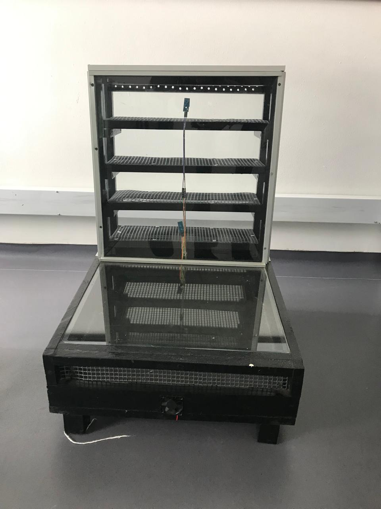
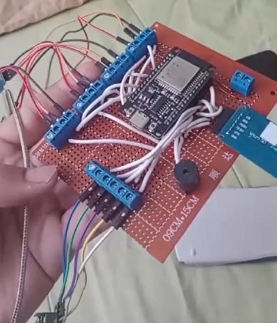
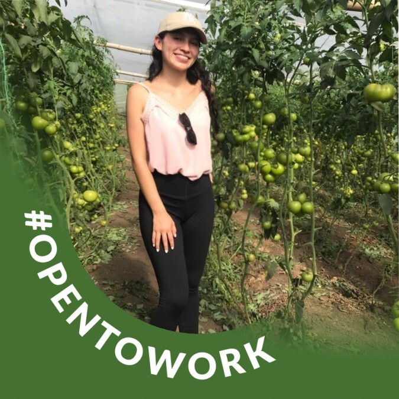

Automatización Secador Solar
Este sistema automatiza la toma de datos de un secador solar usando sensores DHT11 conectados a ESP32.
Estado ESP32
Inactivo
Temperatura
- °C
Humedad
- %
Estado del Proyecto
Hitos del Proyecto
- Feb 2025: Diseño del prototipo
- Mar 2025: Integración de sensores ESP32
- Abr 2025: Desarrollo de la interfaz web
- Actualidad: Pruebas de monitoreo en tiempo real

Prototipo Secador Solar
Estructura base recolector solar y primeros sensores instalados.

Montaje ESP32
Montaje en breadboard del circuito para tomar datos con el esp32.
Mensajes del sistema (Logs)
Datos del Sensor DHT11
Quienes somos?

Angie Katherine Hurtado Montañez
Ingeniera agrícola en formación
Jhony Javier Patiño Alvira
Ingeniero agrícola en formación
Angel Leonardo Gonzalez Padilla
Ingeniero agrícola en formación
Tecnologías utilizadas
Rust
Lenguaje principal del backend, elegido por su velocidad y seguridad.
PostgreSQL
Base de datos relacional robusta para almacenar datos de sensores.
jQuery
Librería ligera para manejar la interactividad del frontend.
Docker
Contenedores para facilitar el despliegue del sistema completo.